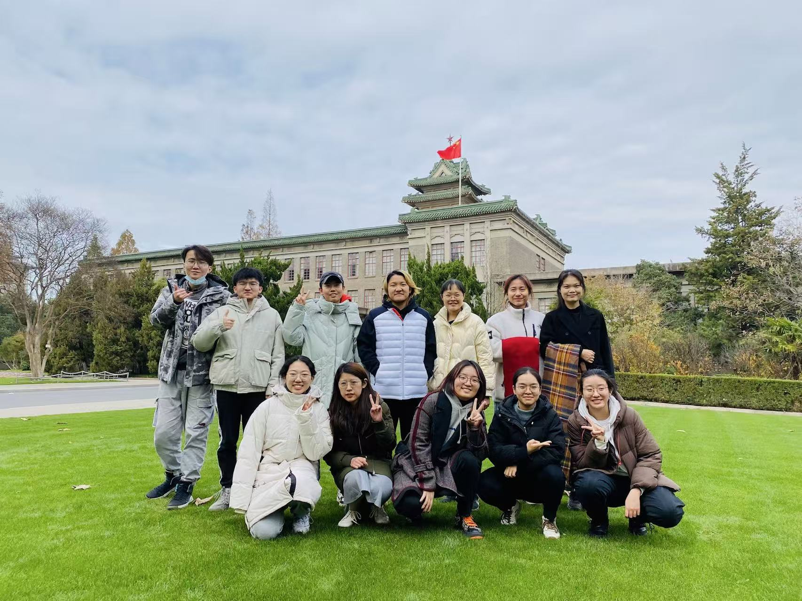
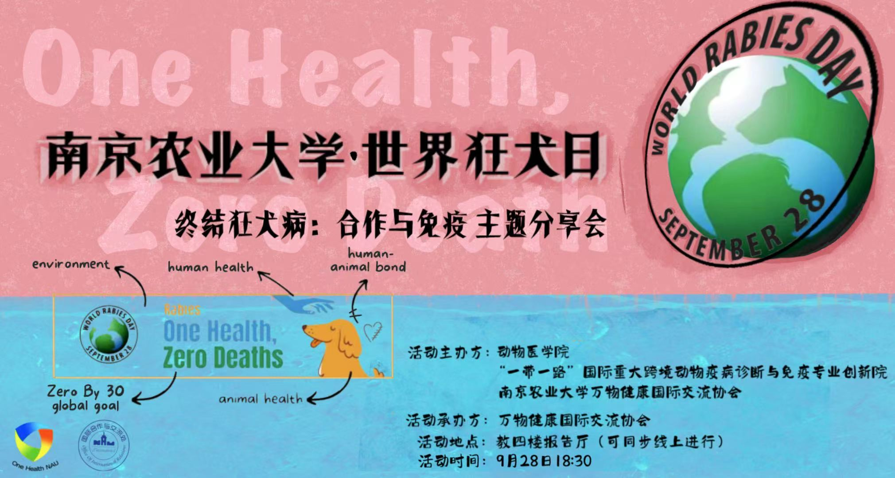
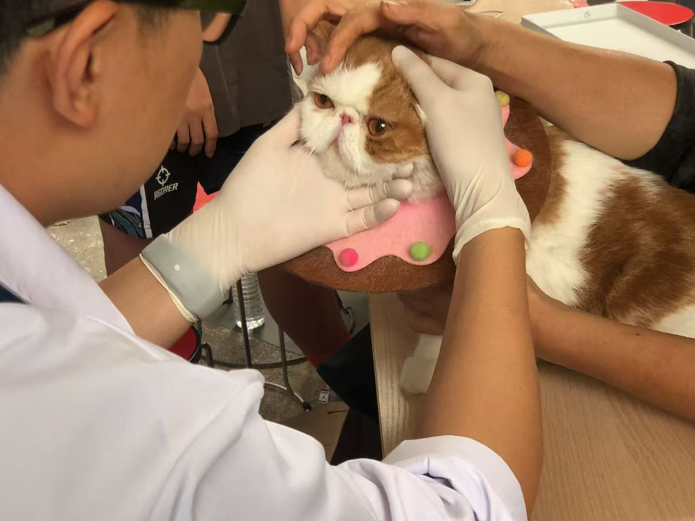
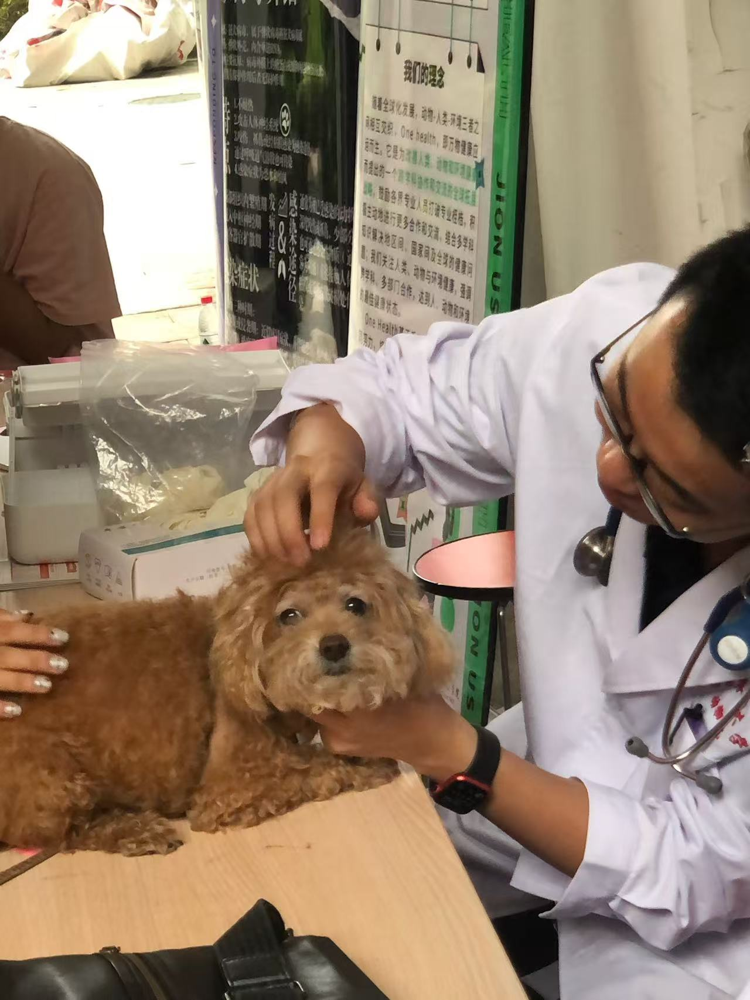
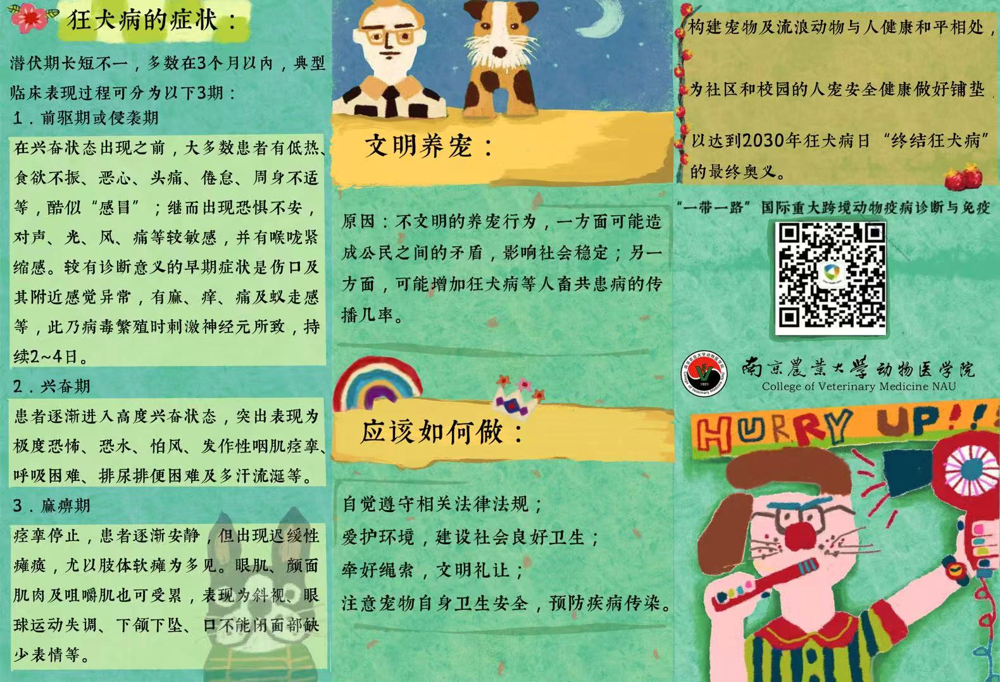
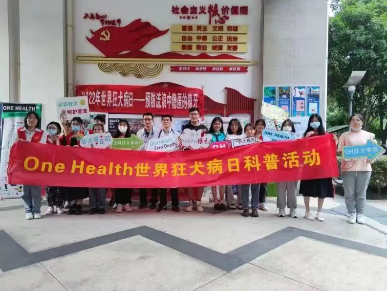

Three smaller threads from the same club: a global debate course, a rabies-awareness campaign she helped run, and two international online exchanges.
"4880" was a cross-institutional course taught jointly by Cornell University, the Tata Institute of Social Sciences in India, and Nanjing Agricultural University and China Agricultural University in China. Over ten rotating professors lectured across agricultural economics, bioenergy, food and nutrition science, and animal science, all orbiting one question: how do food, energy, and water systems interact, and what happens when a government pulls one lever.
The course's one structured debate asked: should the US government make policy and provide subsidies to fully electrify the country's transportation system? Manchen's team, a mix of American, Indian, and Chinese students, was assigned Team Pro, arguing that it should, and as soon as possible.
No score or "winner" survives in the record, only the topic, the roster, and the case they built. What did stick, by her own account, was the exposure: talking through an open-ended policy question with classmates from very different academic worlds, and being pushed to see how food, energy, and animal systems are tangled together. She later pointed to this course as an early root of her interest in sustainable development.

Every September 28 is World Rabies Day, and in 2022 the club ran a campaign around it under the banner "One Health, Zero Deaths," hosted with NAU's College of Veterinary Medicine and its Belt and Road cross-border animal disease institute. Manchen was one of the planners and organizers, running both the offline volunteer work and the online lecture, and as the club's publicity lead she wrote and published the WeChat posts promoting it.
On the ground, that meant free veterinary clinics for residents' pets in two Nanjing communities, Hongshan Road and Yincheng East Garden, where veterinary staff and students examined pets and answered owners' questions. She designed the outreach pamphlet and the poster for the closing lecture, "Ending Rabies: Cooperation and Immunity," held that evening in the College of Veterinary Medicine's lecture hall with an online option.





Alongside the club's on-campus work, she took two international online programs. In January 2023, a two-week Wageningen Academy winter school on biotechnology, agriculture and food had her working with an interdisciplinary team on regenerative agriculture, tracing a full value chain from environmental issues through food processing to human nutrition.
Two years earlier, over July and August 2021, UW Advance Agriculture at the University of Wisconsin–Madison covered biosystems engineering, crop growth and management, and soil security, closing with a research assignment on invasive aquatic species in China.